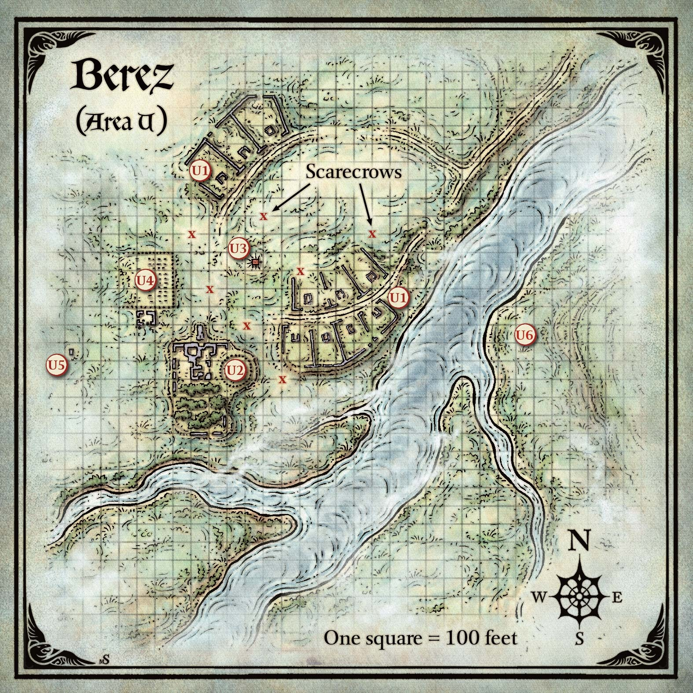
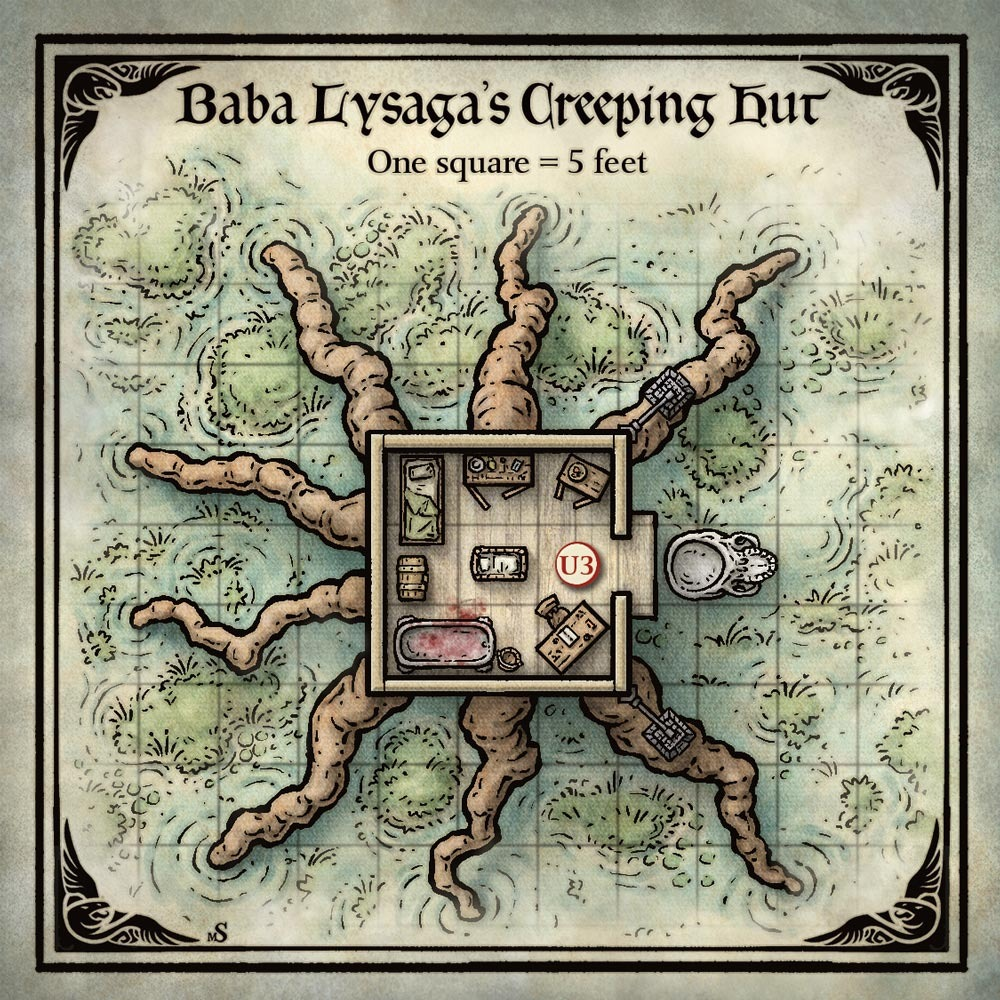

이레나 콜리아나(Ireena Kolyana)보다 오래전에, 베레즈(Berez)에서 온 마리나(Marina)라는 농민 여인이 있었다.
뱀파이어 스트라드(Strahd)가 루나 강(Luna River) 기슭의 이 작은 마을에서 마리나를 처음 만났다. 마리나는 외모와 태도 모두 스트라드가 사랑하는 타티아나(Tatyana)와 놀라울 정도로 닮아 있었고, 스트라드의 집착이 되었다. 그는 깊은 밤에 그녀를 유혹하고 피를 탐했지만, 그녀가 뱀파이어로 변하기 전에 베레즈의 부르고마스터 라즐로 울리히(Lazlo Ulrich)가 지역 사제 그리고르 수사(Brother Grigor)의 도움을 받아, 마리나의 영혼을 저주로부터 구하기 위해 그녀를 죽였다. 격노한 스트라드는 사제와 부르고마스터를 죽인 뒤, 대지에 대한 자신의 힘으로 강을 범람시켜 마을을 침수시키고 주민들을 쫓아냈다. 이후 습지가 밀려들어 주민들의 귀환을 막았다. 베레즈는 그때부터 대부분 버려진 채 남아 있다.
베레즈의 폐허에는 이제 바바 리사가(Baba Lysaga, 부록 D 참조)가 살고 있다 — 스트라드의 태고 과거와 얽힌 거의 신화적인 존재이다. 은둔자인 그녀는 대부분의 시간을 스트라드의 영지에 들끓는 까마귀와 늑대까마귀(Wereraven)를 사냥하여 죽이기 위한 허수아비를 만들고 움직이게 하는 데 쓴다. 사악한 마법을 부리지 않을 때, 바바 리사가는 어머니 밤(Mother Night)에게 짐승을 제물로 바치고 피를 모아, 초승달 밤에 피로 목욕하는 의식으로 극도의 노쇠를 막는다.
바바 리사가는 최근 포도주 마법사(Wizard of Wines) 포도원(제12장)에서 마법 보석을 훔쳤다. 포도원을 지키는 늑대까마귀들이 보석을 되찾으러 올 것이라는 기대에서였다. 그녀는 적들을 죽음으로 유인하기 위한 미끼로 보석을 오두막에 보관하고 있다. 보석이 오두막에 생명의 기운을 부여했다.
내게는 내 생혈 외에는 줄 것이 아무것도 남지 않았다. 하지만 그것은 그녀가 가져갈 몫이었다. 그녀는 마침내 나의 신부가 될 것이었다.
— 스트라드 폰 자로비치(Strahd von Zarovich),
《나, 스트라드: 뱀파이어의 회고록(I, Strahd: The Memoirs of a Vampire)》 中
다음 박스 텍스트는 캐릭터들이 구 스발리치 가도(Old Svalich Road)에서 이어지는 오솔길을 따라 북쪽에서 베레즈에 접근한다고 가정한다. 다른 방향에서 접근하면 첫 문장을 읽지 않는다.
오솔길이 수 마일에 걸쳐 강을 따라간다. 흙과 풀은 곧 습지로 바뀌고, 길은 갈대 군락과 고인 물웅덩이가 곳곳에 박힌 물렁한 땅 속으로 녹아든다. 두꺼운 안개 장막이 모든 것을 뒤덮는다. 습지 곳곳에 낡은 농가들이 흩어져 있다. 벽은 검은 곰팡이에 뒤덮이고, 지붕은 대부분 무너져 내렸다. 이 허물어진 집들은 진창 속에 웅크린 듯, 오래전에 질퍽한 진흙에서 벗어나기를 포기한 것 같다. 어디를 보든 피에 굶주린 검은 파리 떼가 날아다닌다.
강 건너편은 안개가 훨씬 옅으며, 어두운 입석(立石) 원 사이에서 빛이 번뜩인다.
강의 깊이는 다양하지만 최대 10피트를 넘지 않는다. 늑대까마귀인 뮤리엘 빈쇼(Muriel Vinshaw)가 인간 형태로 입석 원(구역 U6) 사이에 숨어 등불로 영웅들에게 신호를 보내고 있다. 마을 본체에서는 안개 때문에 120피트 너머의 크리처나 물체를 볼 수 없다.
일부 흙길 구간이 남아 있으며, 이곳은 험난 지형이 아니다. 하지만 습지는 험난 지형이다. 캐릭터들이 습지에서 짧은 휴식이나 긴 휴식을 취할 때마다, 폐허 건물에 바리케이드를 쳐도, 1d4 벌레 떼(배고픈 파리 떼, 몬스터 매뉴얼의 벌레 떼(말벌) 능력치 사용)의 습격을 받는다. 벌레 떼는 구역 U3이나 U5에 있는 캐릭터에게는 달려들지 않는다.
아래 구역들은 베레즈 지도의 표시에 해당한다.

낮은 돌담으로 나뉜 이 무너진 농가 무리에 다가가자, 온전히 남은 짧은 흙길 구간이 보인다.
농가들에는 썩은 가구와 가치 있는 것이 없다. 농가를 나누는 벽은 3피트 높이로 쉽게 넘거나 돌아갈 수 있다.
마을 남쪽 끝, 높은 지대에 세워진 저택의 잔해가 놓여 있다. 돌 무더기와 썩은 목재로 줄어들었다. 비어 있는 아치형 창문이 당신을 응시한다. 폐허 남쪽에는 길들여지지 않은 정원이 무성히 자라, 더 이상 그것을 억제하지 못하는 무너진 벽에 둘러싸여 있다. 폐허 동쪽에는 누군가 조잡한 나무 울타리를 세워 원형 마당을 만들었고, 그 안에 여러 마리의 염소가 갇혀 있다. 울타리 기둥 꼭대기에는 인간 해골이 얹혀 있다.
무너진 저택에는 썩은 가구와 장식의 잔해가 널려 있다. 베레즈의 마지막 부르고마스터 라즐로 울리히(Lazlo Ulrich)가 유령(Ghost)으로 이 폐허를 떠돌고 있다. 캐릭터들이 저택을 수색하면, 유령이 그들 앞에 나타난다:
안개 속에서 유령이 형체를 취한다 — 거인 같은 남자의 모습으로, 얼굴은 훼손되고 내장이 닳은 밧줄처럼 늘어져 있다. 위압적인 존재감에도 불구하고, 환영의 눈에는 움찔하는 빛이 있다. "왜 내 집에 침입하느냐? 부디, 떠나주시오!"
스트라드는 불쌍한 마리나에게 한 짓 때문에 부르고마스터 울리히의 영혼이 안식을 찾는 것을 거부한다. 유령은 촉구하면 마리나의 슬픈 이야기를 들려준다. 마리나가 이레나 콜리아나(Ireena Kolyana)의 모습으로 다시 태어났음을 울리히에게 납득시켜야만 캐릭터들은 고통받는 영혼을 안식에 들게 할 수 있다. 유령은 이레나를 직접 봐야 하며, 무너진 저택의 경계 바깥으로 이동할 수 없다.
울리히의 유령은 중립 선 성향이다. 위협을 받거나 캐릭터들이 폐허에서 보물을 찾기 시작하면 공격한다. 유령이 0 HP로 줄어들면 24시간 후 재생된다. 캐릭터들은 울리히의 영혼을 안식에 들게 할 때만 경험치를 받으며, 전투로 유령을 쓰러뜨려도 경험치를 받지 않는다.
카드 점술이 베레즈에 보물이 숨겨져 있다고 밝히면, 울리히의 유령이 보물의 진짜 위치를 가리키며 사라지면서 다음과 같이 말한다:
"서쪽으로 가라. 저택에서 200보 떨어진 곳에 나의 어리석음의 기념비와 네가 찾는 보물이 있다."
울리히의 안내를 따르는 캐릭터들은 구역 U5에 도달한다.
저택 내부의 잔해 아래에 온전한 지하실로 내려가는 돌 계단이 묻혀 있다. 한 명이 잔해를 치우려면 4시간이 걸리고, 여러 명이 함께하면 비례하여 시간이 줄어든다. 지하실은 30피트 정사각형 방으로, 모르타르를 바른 석벽, 나무 대들보가 받치는 10피트 높이 천장, 3인치 깊이의 고인 물에 잠긴 바닥으로 되어 있다. 지하실에는 포도주 마법사(Wizard of Wines) 와이너리의 빈 썩은 통 24개가 있다. 각 통에는 르 스톰프의 샴페인(Champagne du le Stomp)이라는 라벨이 붙어 있다.
무너진 저택 뒤편의 정원은 야생으로 돌아갔다. 키 큰 잡초와 가시 넝쿨 뒤에 잘생긴 남성과 아름다운 여성의 나체 조각상, 그리고 조각된 돌 벤치가 숨어 있다.
정원에 10피트 이상 들어간 캐릭터를 네 마리의 거대 독사(Giant Poisonous Snake)가 공격한다.
바바 리사가는 염소를 잡아 장수 의식에 피를 사용한다. 아홉 마리의 염소가 이 울타리 뒤에 갇혀 있다. 울타리 기둥 꼭대기에 인간 해골 50개가 10피트 간격으로 얹혀 있다.
울타리에는 문이 없으며, 바바 리사가는 비행 해골(구역 U3)을 타고 우리에 드나든다. 캐릭터들이 울타리를 해체하거나 손상시켜 염소를 풀어주려 하면, 울타리 기둥 위의 해골들이 울부짖기 시작하여 1분간 지속된다. 소란이 바바 리사가를 끌어들이며, 비행 해골을 타고 2라운드 후 주도권 수치 20에서 도착한다. 울부짖는 해골은 습지의 허수아비 일곱 체도 끌어들인다 (위의 "습지의 허수아비" 참조). 모든 허수아비에 대해 주도권을 한 번 굴린다.
한때 거대한 나무였던 그루터기 위에 누군가 허름한 나무 오두막을 지었다. 그루터기의 썩어가는 뿌리가 거대한 거미 다리처럼 진창에서 솟아 있다.
오두막 한쪽에 열린 출입구가 보이고, 그 아래에 뒤집힌 거인의 속 빈 해골이 떠 있다. 출입구 양옆에 처마에서 흉측한 장식처럼 매달린 두 개의 철 새장이 있다. 각 새장에 수십 마리의 까마귀가 갇혀 있다. 당신이 다가가자 까악까악 울며 날개를 흥분스럽게 퍼덕인다.

바바 리사가(부록 D 참조)는 다른 곳의 활동에 이끌리지 않는 한 오두막 안에 있다. 새들의 꽥꽥거림은 그녀에게 음악이지만, 소음 때문에 접근하는 사람의 소리를 들을 수 없다. 구역 U2의 해골 울음이나 가까운 전투 소리만이 꽥꽥거림을 넘어 들릴 만큼 크다.
각 새장 안에는 까마귀 떼(Swarm of Ravens)가 있으며, 풀려나면 바바 리사가와 그녀의 허수아비를 맹렬히 공격한다. 각 새장은 바바 리사가의 비밀 자물쇠(Arcane Lock) 주문으로 잠겨 있으며, 열려면 노크(Knock) 주문이나 DC 20 근력 판정에 성공해야 한다. 도둑 도구와 DC 20 민첩 판정으로도 자물쇠를 딸 수 있다.
오두막 옆에 떠 있는 뒤집힌 해골은 바바 리사가가 속을 파내 이동 수단으로 변환한 언덕 거인(Hill Giant)의 해골이다. 바바 리사가가 비행을 명할 때까지 제자리에 떠 있으며, 안에 있을 때만 명령할 수 있다. 비행 속도 40피트. 다른 누구도 해골을 조종할 수 없다. 해골 안의 크리처는 외부 공격에 대해 3/4 엄폐를 받는다. 해골은 중형 크리처 하나가 들어갈 크기이다. AC 15, HP 50, 독과 정신 피해에 면역이다.
오두막은 한 변이 15피트이며, 나무 침대, 고리버들 캐비닛, 가느다란 옷장, 나무 탁자, 걸상, 황동 띠로 보강된 통 꼭대기의 나무 궤, 피에 물든 철 욕조 등 낡은 가구로 가득하다. 방 한가운데에는 끔찍한 나무 요람이 있고, 그 안에 작고 천사 같은 아이가 앉아 있다. 요람을 제외한 모든 가구는 바닥에 볼트로 고정되어 있다. 요람 아래, 썩어가는 마루판 틈새로 녹색 빛이 새어 올라온다.
아이와 요람은 바바 리사가가 프로그래밍된 환영(Programmed Illusion) 주문으로 만든 환영이다. 바바 리사가는 아이를 "스트라드"라 부르며, 자신을 보호하는 어머니로 여기는 광기에서 이 환영을 만들었다.
오두막의 썩은 마루판 아래에 3피트 깊이의 공동이 있으며, 바바 리사가가 포도주 마법사 와이너리에서 가져온 마법의 녹색 빛나는 보석이 들어 있다. 이 보석이 오두막에 생기를 부여한다 (아래 "특별 이벤트"의 "기어다니는 오두막" 참조). 마루판은 DC 14 근력 판정에 성공하면 뜯거나 부술 수 있다. 바닥에 10 피해를 입혀도 뚫을 수 있다. 그러나 오두막은 보석을 쉽게 내주지 않는다 (부록 D의 "바바 리사가의 기어다니는 오두막" 참조). 보석이 파괴되거나 공동에서 꺼내지면 오두막은 무력화된다.
바바 리사가는 옷장에 더러운 로브를, 고리버들 캐비닛에 각종 주문 구성요소를 보관한다. 욕조는 노쇠를 방지하기 위해 의식적으로 피로 목욕하는 곳이다 (부록 D "바바 리사가" 항의 "어머니 밤의 선물" 참조). 캐릭터들이 적절한 시간에 들키지 않고 오두막에 접근하면, 바바 리사가가 목욕하는 모습을 볼 수 있다.
오두막의 나무 궤는 수호 문양(Glyph of Warding)으로 보호되어 있으며, 찾으려면 DC 17 지능(수사) 판정에 성공해야 한다. 문양은 발동 시 5d8 천둥 피해를 입힌다. 뚜껑을 열면 네 개의 기어 다니는 손(Crawling Claw)이 나와 파괴될 때까지 싸운다. 궤에는 바바 리사가가 수년간 죽은 모험가들에게서 가져온 다양한 물품이 들어 있다:
카드 점술이 이곳에 보물이 있다고 밝히면, 다른 물품과 함께 궤 안에 있다.
안개 사이로 낡은 석조 교회의 빈 껍데기가 보인다. 교회 북쪽에는 무너져가는 철 울타리로 둘러싸인, 기울어진 묘비들의 묘지가 있다. 묘지의 절반이 진창 속으로 가라앉았다.
묘지에는 썩은 관과 곰팡이 핀 뼈가 묻혀 있다. 교회 내부를 탐색하는 캐릭터는 썩은 강단 잔해와, 무너진 종탑 잔해 사이에 습지에 반쯤 잠긴 낡은 철 종을 발견한다.
마리나의 죽음 후 스트라드가 이 기념비를 세웠다. 기념비는 습지에 숨겨져 있어, 캐릭터들이 철저히 뒤지지 않는 한 스스로 찾기 어렵다. 부르고마스터 울리히의 영혼을 안식에 들게 하면 (구역 U2 참조), 사라지기 전에 이 위치를 가리킨다. 울리히의 안내 없이, 캐릭터는 기념비가 있는 구역에 들어가 해당 지역을 수색해야 한다. 10분간 수색한 캐릭터는 DC 15 지혜(지각) 판정을 하여, 성공하면 기념비를 찾는다. 실패하면 10분 더 수색한 뒤 다시 판정할 수 있다.
다음 박스 텍스트는 캐릭터들이 이레나 콜리아나를 만났다고 가정한다. 만나지 않았으면 그녀를 언급하는 문장을 읽지 않는다.
안개에 가려져, 주변 습지보다 몇 피트 높은 한 뼘 남짓한 땅이 있다. 거의 10피트 정사각형이며, 무너져가는 철 울타리에 둘러싸여 있다. 가운데에는 장미를 쥐고 무릎 꿇은 농민 소녀의 실물 크기 석조 기념비가 있다. 회색으로 풍화되었지만, 이레나 콜리아나와 놀라울 정도로 닮아 있다. 기념비 받침에 비문이 새겨져 있다.
비문은 다음과 같다: 마리나, 안개에 빼앗긴 자(Marina, Taken by the Mists).
카드 점술이 이곳에 보물이 있다고 밝히면, 기념비 아래 공동에 숨겨져 있다. DC 15 근력 판정에 성공하면 기념비를 넘기거나 옆으로 밀 수 있다.
캐릭터들이 기념비를 건드리면, 다음을 읽어준다:
개구리 울음과 귀뚜라미 소리가 잦아들고, 부패의 악취가 강해진다. 진흙과 물을 밟는 묵직한 발소리가 들리더니, 부푼 잿빛 형체들이 안개 속에서 비틀거리며 나온다.
기념비 서쪽 진창에서 부풀어 오른 인간 시체 일곱 구가 일어났다. 처음 보일 때 60피트 거리에 있다. 시체에는 평민(Commoner) 능력치를 사용하되, 이동 속도를 20피트로 줄이고 매혹 및 공포 상태에 면역을 부여한다. 시체가 0 HP로 줄어들면 갈라지며 독사 떼(Swarm of Poisonous Snakes)를 쏟아낸다. 뱀들은 배고프며 죽을 때까지 싸운다.
캐릭터들은 보물을 챙기고 도주할 수 있으며, 뱀으로 부푼 시체보다 쉽게 앞설 수 있다.
이끼 낀 선돌(멘히르) 열두 개가 물렁한 땅에 거의 완벽한 원을 이루고 있다. 이 풍화된 돌들은 높이가 15~18피트에 이른다. 몇몇은 안쪽으로 기울어, 불가사의한 이웃과 무슨 거대한 비밀이라도 나누려는 듯하다. 경계하는 눈빛의 농민 여인이 가장 큰 돌 뒤에 숨어 있는데, 구부러진 한 손에 녹슨 등불을, 다른 손에 단검을 쥐고 있다.
이 여인은 뮤리엘 빈쇼(Muriel Vinshaw), 늑대까마귀(Wereraven, 부록 D 참조)이자 마르티코프(Martikov) 가문의 벗이다 (제5장 및 제12장 참조). 발라키(Vallaki) 주민인 뮤리엘은 동료 늑대까마귀들을 위해 바바 리사가를 염탐하지만, 마을 본체는 피하고 변두리에서 잠복한다. 캐릭터들이 말하게 두면, 뮤리엘은 베레즈의 위험을 경고하고 다음 정보를 제공한다:
뮤리엘은 전투를 피하며 공격받으면 도주한다. 가능한 한 오래 수인(獸人) 정체를 숨기며, 아는 다른 늑대까마귀의 신원을 자발적으로 밝히지 않는다. 바바 리사가에 맞서기로 하는 캐릭터와 동행하도록 설득할 수 없다. 그러나 뮤리엘은 바로비아를 잘 알고 있어, 모험가들이 관심을 가질 만한 인근 장소를 가리킬 수 있다 — 폐허 저택 아르긴보스트홀트(제7장)와 예스터 힐(Yester Hill)로 알려진 고대 매장지(제14장)를 포함하여. 뮤리엘은 예스터 힐의 드루이드에 대한 이야기를 들으며 자랐으며, 특히 그들이 고대 신앙을 버리고 악마 스트라드를 숭배하게 된 경위를 안다. 뮤리엘은 드루이드들이 때때로 입석 원을 찾아온다는 것을 알고 있으며, 최대한 그들을 피한다.
캐릭터들이 베레즈 폐허를 탐험하는 동안 다음 이벤트 중 하나 또는 모두를 사용할 수 있다.
바바 리사가는 포도주 마법사 포도원에서 훔친 마법 보석으로 오두막에 생명의 기운을 부여했다. 캐릭터들이 환영받지 못할 정도로 머물면, 오두막을 움직여 공격하라고 명한다. 이 경우, 다음을 읽어준다:
오두막 아래의 거대한 뿌리가 생명을 얻어 진창에서 스스로를 끌어올린다. 오두막과 뿌리가 비틀거리고 신음하며, 걸으면서 부서지는 거대한 덩어리가 되어 지나가는 모든 것을 으스러뜨린다.
바바 리사가의 기어다니는 오두막(부록 D 참조)은 바바 리사가의 지시에만 따르는 느릿한 구조물이다. 파괴되거나, 오두막에 생기를 부여하는 보석이 제거 또는 파괴될 때까지 싸운다. 바바 리사가는 보석 없이는 오두막이 무력화되므로, 캐릭터들이 보석을 얻지 못하도록 모든 수단을 동원한다.
이 이벤트는 캐릭터들이 폐허를 떠난 뒤 베레즈 북쪽으로 이동할 때 발생한다.
전투의 소리가 들리지만, 안개가 너무 짙어 60피트 너머를 거의 볼 수 없다. 갑자기 안개가 전장을 가로지르며 돌격하는 기마 병사들의 형상을 취한다. 악마뿔 투구를 쓴 갑옷 입은 창병들과 부딪힌다. 전사가 쓰러질 때마다 사라지는 안개로 변한다. 수백 명의 병사가 더 비명과 금속 부딪히는 소리의 폭풍 속에 충돌한다.
캐릭터들은 이 유령 전장을 무사히 지나갈 수 있으며, 주변의 안개 형상에 해를 끼칠 수 없다. 병사들은 문장이나 휘장을 알아볼 수 있을 만큼 단단하지 않지만, 양쪽 군대가 모두 인간임은 분명하다.
캐릭터들이 아직 아르긴보스트홀트(제7장)를 탐험하지 않았다면, 다음을 추가한다:
우레 같은 포효가 들리고, 몇 초 후 은빛 안개로 된 거대한 용이 머리 위를 활공하며, 강력한 날개를 퍼덕일 때마다 적군 병사들을 흩뜨린다. 길고 파충류 같은 꼬리가 당신 위의 공기를 가르며, 용이 안개를 가르자 계곡을 내려다보는 어두운 저택이 잠깐 보인다.
용은 병사들과 마찬가지로 무해한 환영이다. 캐릭터들이 본 저택은 아르긴보스트홀트이다.
Curse of Strahd — Chapter 10: The Ruins of Berez
한국어 번역본